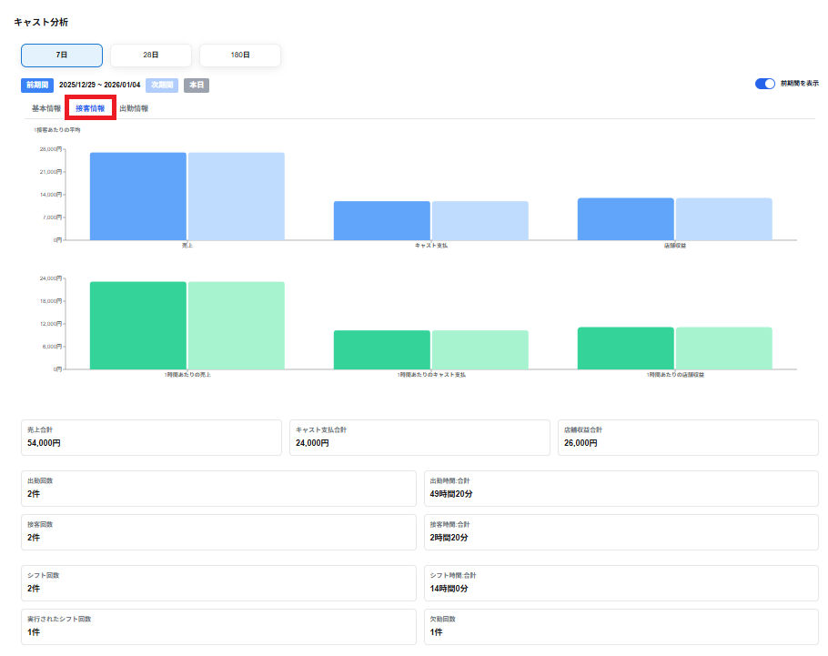

接客情報のタブには以下の項目が接客1件あたりの平均で表示されます。
・売上
請求金額の1接客あたりの平均が表示されます。
・キャスト支払
キャスト支払の1接客あたりの平均が表示されます。
・店舗収益
店舗収益の1接客あたりの平均が表示されます。
・1時刻あたりの売上
1時刻あたりの売上が表示されます。
1時刻あたりの売上＝売上合計 ÷ 接客時刻合計で算出されます。
・1時刻あたりのキャスト支払
1時刻あたりのキャスト支払が表示されます。
1時刻あたりのキャスト支払＝キャスト支払合計 ÷ 接客時刻合計で算出されます。
・1時刻あたりの店舗収益
1時刻あたりの店舗収益が表示されます。
1時刻あたりの店舗収益＝店舗収益合計 ÷ 接客時刻合計で算出されます。
※売上合計からキャスト支払いと雑費等を引いて、月極寮費を足したものが店舗収益になります。
棒グラフを選択しグラフ上にマウスを合わせると、以下の項目がポップアップで表示されます。
・（現期間）の選択した期間の数値
・（前期間）の選択した期間の数値
※前期間の表示を選択していない場合は表示されません。
※売上合計からキャスト支払いと雑費等を引いて、月極寮費を足したものが店舗収益になります。
